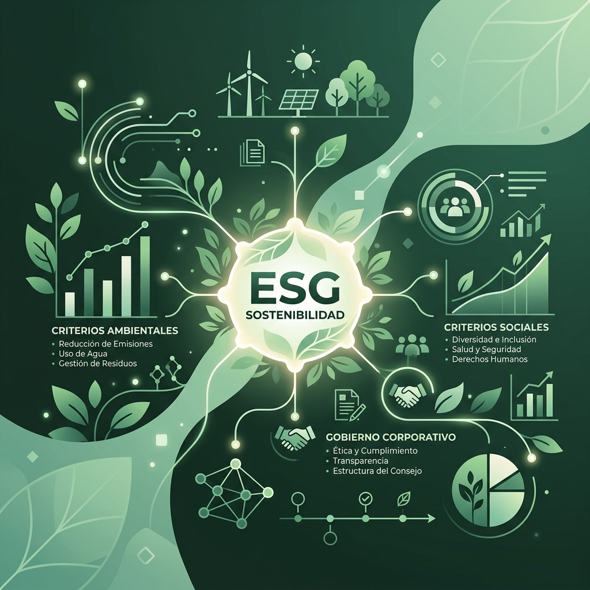
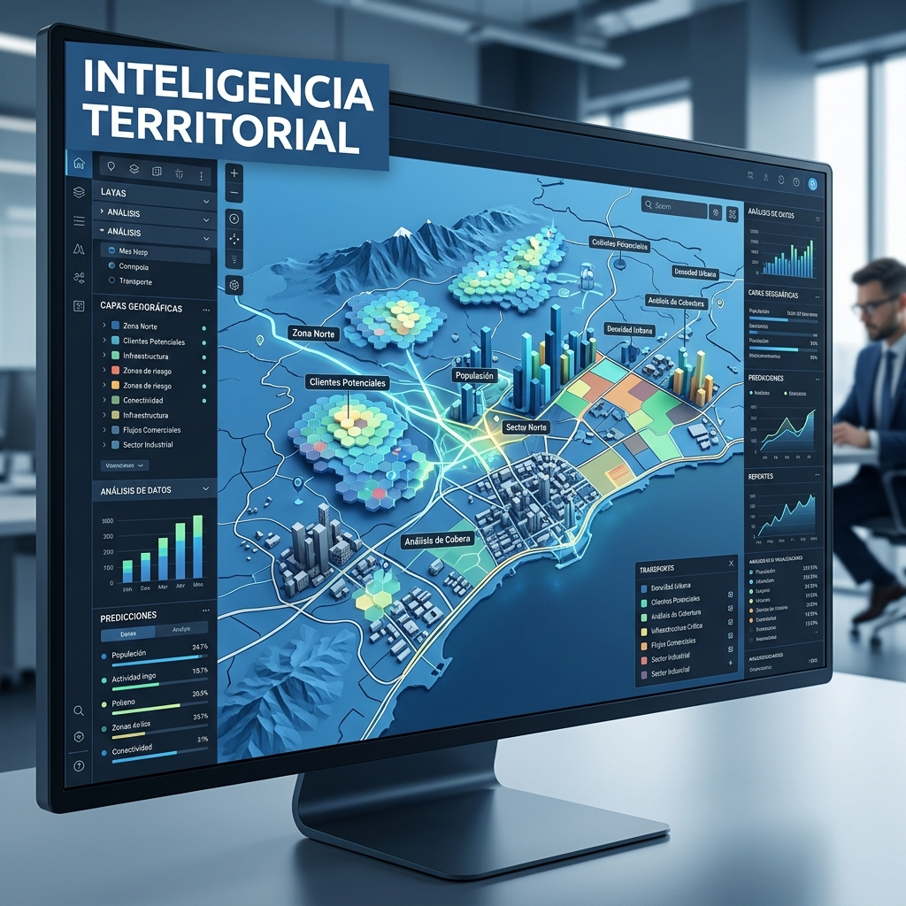

PORTAFOLIO DE SERVICIOS · 2026
Inteligencia Territorial
Sostenibilidad ESG
Gestión de Riesgos
Gestión ambiental estratégica · Sostenibilidad ESG · Inteligencia territorial
qoambiental.com
Nuestras capacidades integrales conectan lo técnico, lo jurídico y lo territorial para asegurar la viabilidad de sus proyectos.
Transformamos el cumplimiento normativo en una ventaja competitiva de negocio real y medible.

No solo asesoramos, estructuramos soluciones de viabilidad ambiental integral.
En Qo-Ambiental acompañamos a organizaciones en la gestión estratégica de sus desafíos ambientales, integrando cumplimiento, sostenibilidad y desarrollo de negocio.
Nuestro enfoque va más allá de la consultoría tradicional: actuamos como un aliado estratégico que conecta lo técnico con los objetivos corporativos, asegurando la competitividad en entornos regulatorios y climáticos exigentes.
Lideramos el cumplimiento normativo para proyectos de alta complejidad.
Estructuración de EIA, PMA y DAA bajo los más altos estándares técnicos exigidos por ANLA y Corporaciones Autónomas Regionales.
Auditorías tácticas en procesos de fusión y adquisición para identificar pasivos, riesgos ocultos y asegurar la viabilidad de la inversión.
Gestión completa de concesiones de aguas, vertimientos, emisiones e intervención de cauces con rigor técnico y eficiencia jurídica.
Control riguroso de obligaciones ambientales para evitar sanciones y asegurar la continuidad operativa del proyecto.

Implementamos estrategias que responden a las demandas actuales.
Estructuración e implementación táctica del Informe 08 integral bajo la normativa de la Superintendencia de Sociedades.
Medición de huella de carbono y diseño de rutas de descarbonización alineadas con ciencia para la neutralidad climática.
Evaluación de impactos y riesgos financieros bajo estándares globales GRI, SASB, TCFD y normas NIIF S1 y S2.
Soporte técnico-pericial y jurídico estratégico para la gestión de descargos ante procesos administrativos sancionatorios ambientales (Ley 1333).
Implementación de Debida Diligencia para prevenir conflictos sociales, asegurar la licencia social y proteger la reputación institucional.
Identificamos y mitigamos vulnerabilidades territoriales antes de que se conviertan en sobrecostos operativos o crisis reputacionales.
Estructuración de modelos de negocio circulares donde los residuos se transforman en recursos, optimizando los costos de disposición y generando valor compartido.
Originación técnica y estructuración de proyectos REDD+ y de reforestación para la generación de créditos de carbono de alta integridad ambiental y social.
Impulsamos la rentabilidad corporativa a través de la regeneración ambiental estratégica.
Aceleramos el despliegue de energías limpias con rigor técnico.
Gestión ambiental de punta a punta, desde el scouting de sitios hasta la licencia definitiva y la infraestructura de conexión eléctrica.
Análisis de viabilidad territorial, gestión de recursos hídricos y estructuración de permisos para proyectos pioneros de nueva generación energética.

Donde el dato geográfico se vuelve una decisión estratégica.
Plataformas personalizadas para el seguimiento de cumplimiento y gestión de activos en tiempo real.
Seguimiento remoto de coberturas vegetales e infraestructura crítica mediante teledetección avanzada.
Modelación de escenarios territoriales para la selección óptima de áreas de proyecto reduciendo conflictos.
Programas de capacitación en cultura de sostenibilidad ESG, gestión de riesgos críticos y cumplimiento técnico para equipos corporativos y operativos.
Seguimiento riguroso a obligaciones terrestres y marinas. Elaboración de Informes de Cumplimiento Ambiental (ICA) con auditoría técnica integrada.
"Garantizamos la trazabilidad total de su gestión ambiental corporativa."
ESCANE PARA VISITAR
QOAMBIENTAL.COM
qoambientalsas@gmail.com
+57 311 538 9614
Villanueva, Casanare
Colombia